Consider, once again, the 5 Octahedra in the 120 Polyhedron.
| All 5 Octahedra in the 120 Polyhedron |
Let us remove 3 of the Octahedra for a moment....
| 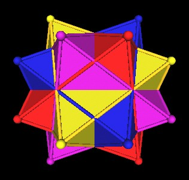 |
| Minus 1. |
| 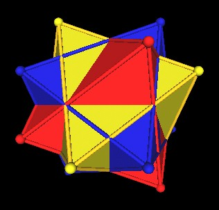 |
| Minus 2. |
| 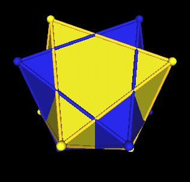 |
| Minus 3. |
Consider how the dark blue edges intersect the yellow edges, We can use these intersection points to draw an equilateral triangle as follows.
| 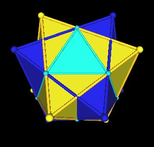 |
In the same way, use the intersecting edge points to draw triangles on all the faces of the dark blue Octahedron. This results in an Icosahedron as can be seen by removing the last 2 Octahedra.
| 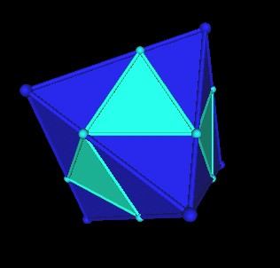 |
| Minus 4. |
| 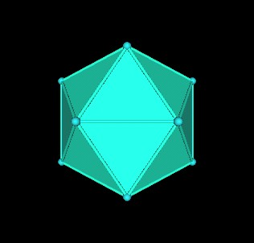 |
| Minus 5. The Icosahedron. |
Here are the relations of each of the 5 Octahedra to this new Icosahedron.
| 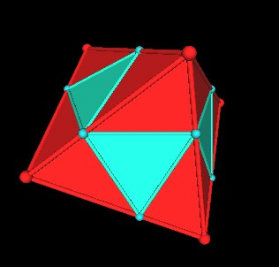 | 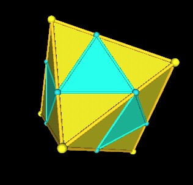 |
| Octahedron and Icosahedron relation. | |
| 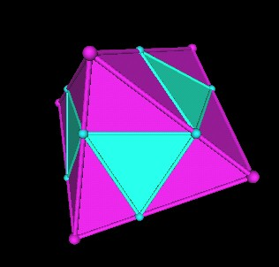 | |
| Octahedron and Icosahedron relation. | |
| 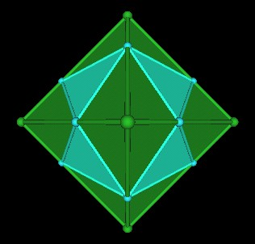 |
| Octahedron and Icosahedron relation. |
Each of these 5 pictures could be considered to be showing a new Jitterbug, one for
each intersection of the Icosahedron with an Octahedron. (To cover each face of an Icosahedron
with Jitterbugs requires 5 Jitterbugs. Each Icosahedron face is actually covered by
2 Jitterbug faces.)
(5x8 faces a Jitterbug=40 triangles.
40/2=20 triangular faces of the Icosahedron.)
Here are all the Octahedra together with this new Icosahedron. The Icosahedron's vertices are light blue, and in this image you can only see a few of these vertices.
Again, the vertices of this new Icosahedron occures at the intersection points of the Octahedra.
For comparison, here is the unscaled Icosahedron as it occurs in the 120 Polyhedron.
| 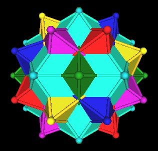 |
The scale factor for this new Icosahedron is S=2/((Golden Mean)^2) which is approx. 0.763932022.
Actually, it is "well known" that 8 of the Icosahedron's triangular faces fit into the 8 face of an Octahedron.
If we take the original 5 Octahedron in the 120 Polyhedron and add in the 5 Cubes as well, as they occur in the 120 Polyhedron, we get the following picture.
| 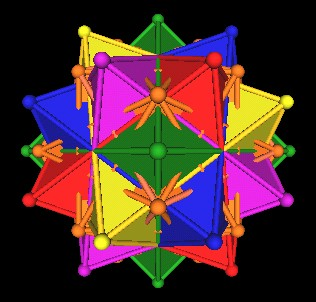 |
It looks like the vertices (brown) of the 5 Cubes occur just above (radially) another group of Octahedra edge intersection points. So we scale down the 5 Cubes until they just match these intersection points.
| 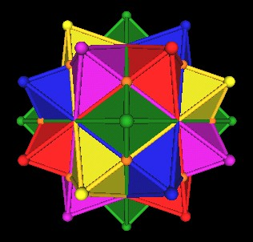 |
| 5 Cubes scaled down. |
We compare the intersection points with those used in the Icosahedron case above.
| 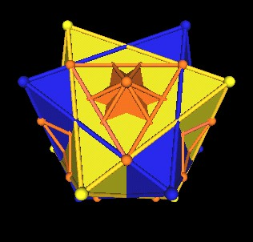 | |
| Octahedra edge intersection points used to define Icosahedron. |
Octahedra edge intersection points used to define 5 Cubes. |
Here are each of the Octahedra and the group of 5 scaled down Cubes.
| 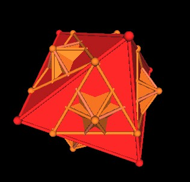 | 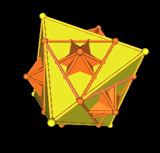 |
| Octahedron and new group of 5 Cubes. | |
| 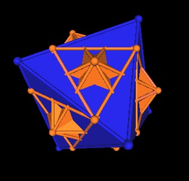 | 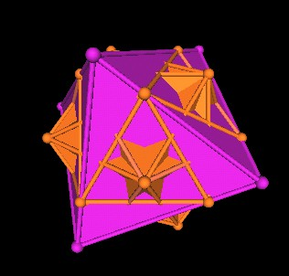 |
| Octahedron and new group of 5 Cubes. | |
| 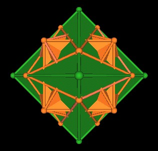 |
| Octahedron and new group of 5 Cubes. |
It is of particular interest to note that the 8 triangles on the Octahedron's 8 faces defined by the intersection of the Ocathedron with the group of 5 scaled down Cubes defines a new Jitterbug. There are 5 Jitterbugs, one for each of the 5 Octahedra.
It was pointed out in the article "What's In This Polyhedron?" that the edges of the group of 5 (unscaled) Cubes in the 120 Polyhedron can be so selected as to define Jitterbugs. Here are 2 pictures from that article.
| 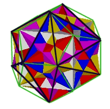 | 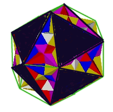 |
| One of 5 possible Jitterbugs defined by group of 5 Cube edges. |
|
Recall that the group of 5 Cubes in the 120 Polyhedron defined the regular Dodecahedron. Scaling the group of 5 Cubes does not change this polyhedra relationship. So, the group of 5 scaled Cubes defines a new, scaled regular Dodecahedron.
| 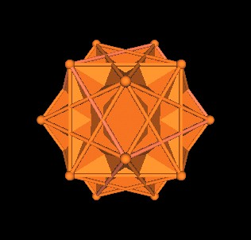 | 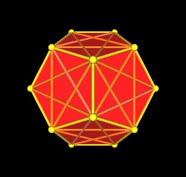 |
| New group of 5 scaled Cubes. | New scaled regular Dodecahedron. |
The scaling factor is 2(Golden Mean)/(2+(Golden Mean)) which is approx. 0.894427191.
As a side note, recall that the 5 intersecting Octahedra is another type of 120 triangular faced polyhedron.
Usage Note: My work is copyrighted. You may use my work but you may not include my work, or parts of it, in any for-profit project without my consent.